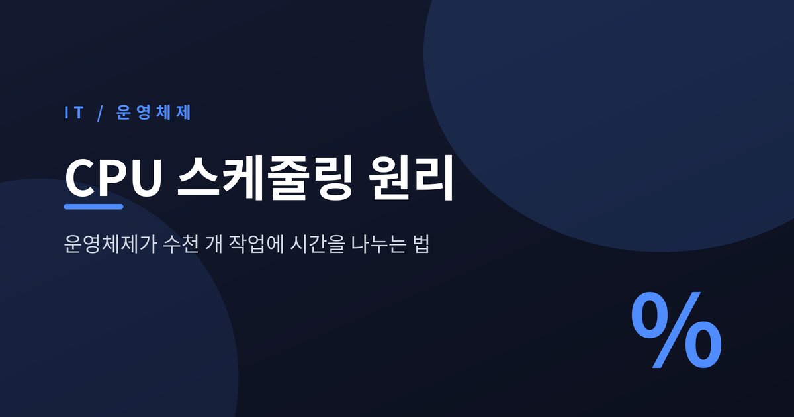
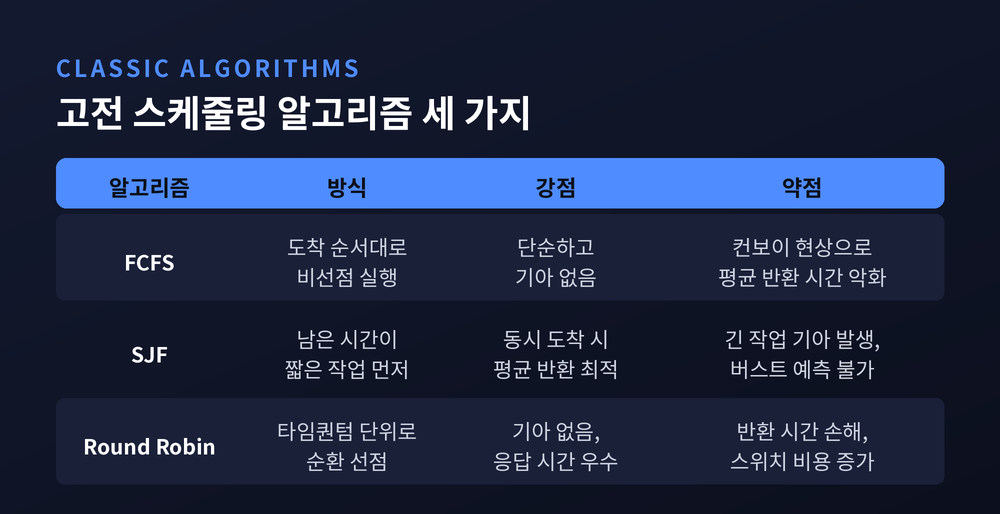
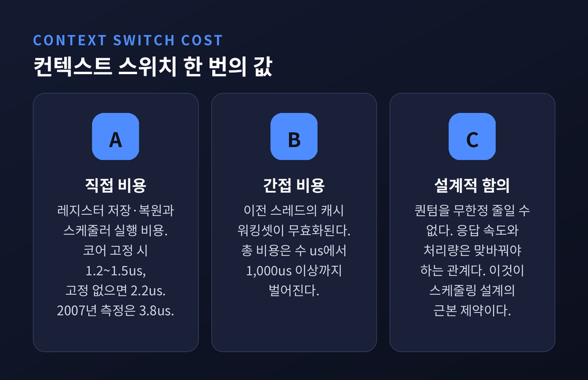
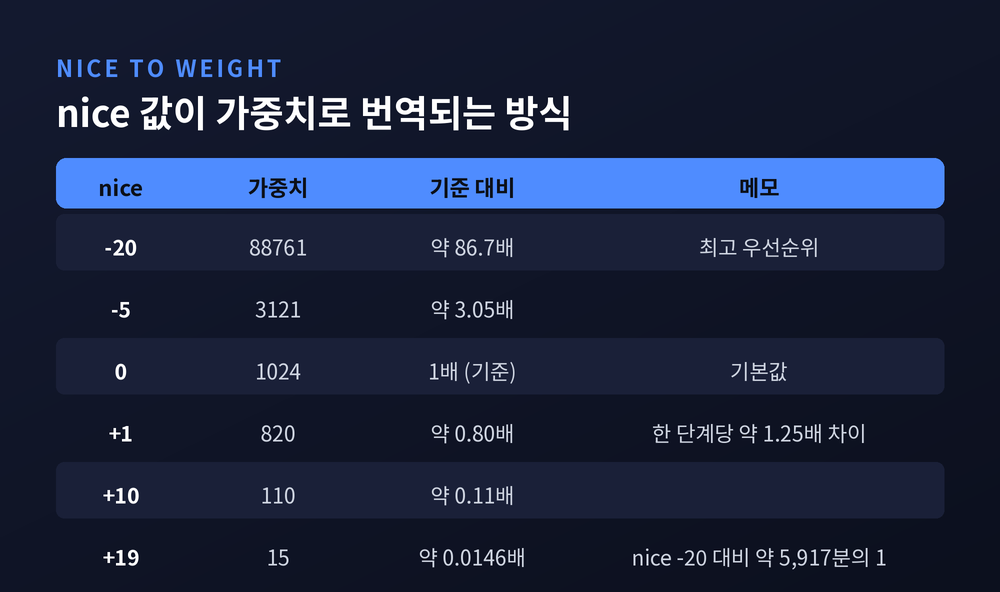
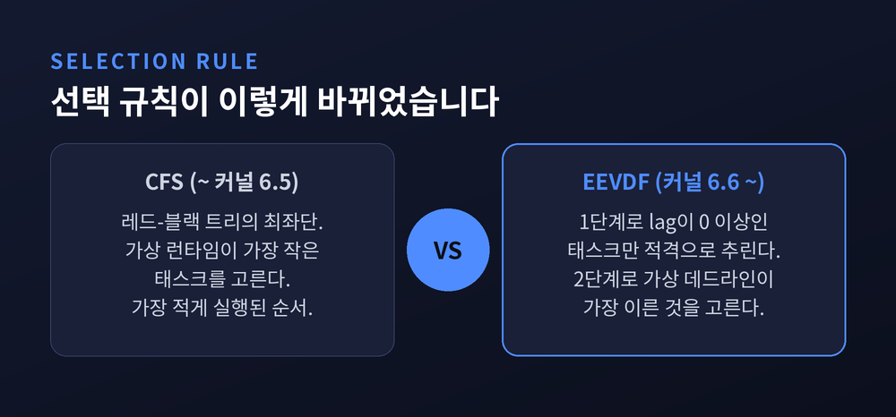
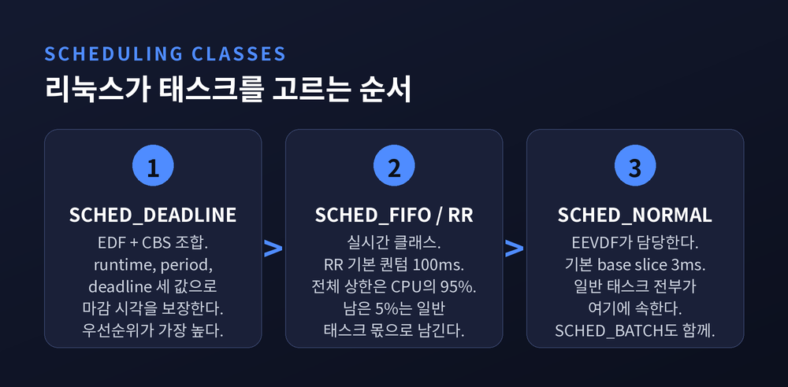
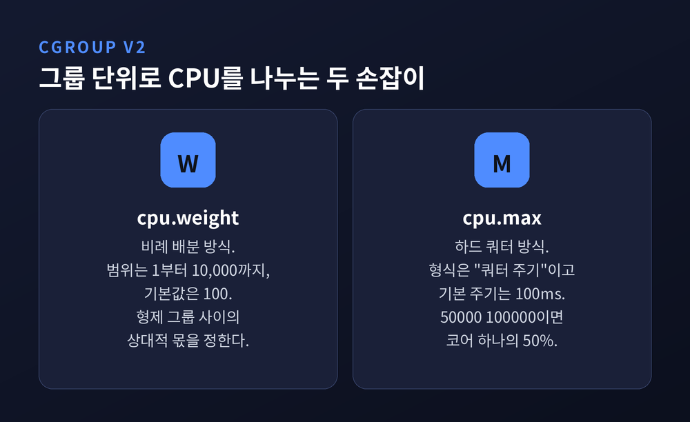

이번 글에서는 CPU 스케줄링의 원리를 정리해 보겠습니다. 코어는 한 순간에 하나의 명령 흐름만 실행하는데, 우리 컴퓨터는 수천 개의 스레드를 동시에 돌리는 것처럼 보입니다. 그 착시를 만들어내는 장치가 스케줄러입니다.
세 줄 요약
물리 코어 하나는 한 순간에 딱 하나의 명령 흐름만 실행합니다. 그런데 지금 이 글을 띄운 컴퓨터에도 수백에서 수천 개의 실행 가능한 스레드가 올라와 있습니다.
리눅스 커널 공식 문서는 CFS의 설계 목표를 한 문장으로 정리합니다. "이상적이고 정밀한 멀티태스킹 CPU를 실제 하드웨어 위에 모델링하는 것."
여기서 말하는 이상적 CPU는 실존하지 않습니다. 태스크가 N개일 때 각각을 정확히 1/N의 속도로 동시에 돌리는 가상의 장치입니다. 태스크가 둘이면 각각 물리 성능의 50%씩 받습니다. 실제 하드웨어는 그렇게 못 하니, 아주 빠르게 번갈아 실행해서 흉내를 냅니다.
여기서 두 갈래가 갈립니다. 실행 중인 프로세스가 스스로 CPU를 놓을 때까지 기다리면 비선점, 커널이 타이머 인터럽트로 강제 회수하면 선점입니다. 현대 범용 운영체제는 예외 없이 선점형입니다. 프로그램 하나가 무한 루프에 빠져도 시스템 전체가 멈추지 않는 이유가 여기 있습니다.
가장 단순한 방법은 도착 순서대로 처리하는 FCFS입니다. 구현이 쉽고 아무도 굶지 않습니다. 하지만 치명적인 약점이 있습니다.
CPU 버스트가 20단위인 무거운 작업이 먼저 도착하고, 1~2단위짜리 가벼운 작업 다섯 개가 뒤따라 왔다고 해보겠습니다. 짧은 작업 다섯 개가 전부 긴 작업 뒤에서 대기합니다. 평균 반환 시간이 형편없어집니다. 이것을 컨보이 현상이라 부릅니다. 고속도로에서 느린 트럭 한 대 뒤로 차들이 줄지어 늘어서는 장면과 같습니다.
그렇다면 짧은 것부터 처리하면 됩니다. SJF입니다. 모든 작업이 동시에 도착한다는 조건이라면 평균 반환 시간에 대해 수학적으로 최적입니다.
그런데 대가가 있습니다. 짧은 작업이 계속 들어오면 긴 작업은 영원히 차례가 오지 않습니다. 기아 상태입니다. 게다가 다음 CPU 버스트가 얼마나 길지 미리 알 방법이 없습니다.
라운드 로빈은 이 둘 사이의 절충안입니다. FCFS에 선점을 더한 형태로, 정해진 타임퀀텀이 끝나면 다음 프로세스로 넘깁니다. 모든 프로세스가 유한한 시간 안에 반드시 한 번은 실행되므로 기아가 없습니다. 짧은 작업은 FIFO보다 빨리 끝나고, 긴 작업은 SJF보다 빨리 끝납니다.
대신 반환 시간은 나빠집니다. 그리고 퀀텀을 짧게 잡을수록 응답성은 좋아지지만 컨텍스트 스위치 횟수가 늘어납니다.

"그러면 퀀텀을 아주 짧게 잡으면 되지 않느냐"는 질문이 자연스럽게 나옵니다. 실제 측정값을 보면 답이 나옵니다.
직접 비용, 그러니까 레지스터를 저장하고 복원하고 스케줄러를 돌리는 비용부터 보겠습니다. 단일 코어에 핀을 고정해 마이그레이션 비용을 뺀 측정에서는 스위치당 1.2~1.5마이크로초가 나왔습니다. 핀 고정을 풀면 약 2.2마이크로초로 늘어납니다. 2023년 재측정에서도 1.3~1.6마이크로초로 비슷했습니다.
반면 2007년 USENIX 논문은 평균 직접 비용을 약 3.8마이크로초로 보고했습니다. 하드웨어 세대와 측정 방법의 차이로 보이지만, 어느 쪽이 맞다고 단정할 근거는 찾지 못했습니다. 대략 1~4마이크로초 범위로 이해하시면 무리가 없습니다.
진짜 문제는 간접 비용입니다. 같은 논문은 간접 비용까지 포함한 총 비용이 수 마이크로초에서 1,000마이크로초 이상까지 벌어진다고 밝혔습니다. 스레드가 바뀌면 이전 스레드가 캐시에 채워둔 데이터가 전부 쓸모없어집니다. 새 스레드는 캐시를 처음부터 다시 데워야 합니다.
컨텍스트 스위치는 레지스터 몇 개 바꿔치는 일이 아닙니다. 캐시를 통째로 날려먹는 일입니다.

CFS는 잉고 몰나르가 구현해 리눅스 2.6.23에 병합됐습니다. 핵심 아이디어는 가상 런타임입니다.
각 태스크의 실제 실행 시간을 실행 중인 태스크 수로 정규화한 값을 커널 내부에 p->se.vruntime으로 나노초 단위 기록합니다. 이상적 하드웨어라면 모든 태스크의 vruntime이 항상 같아야 합니다.
그래서 CFS의 선택 규칙은 놀랄 만큼 단순합니다. vruntime이 가장 작은 태스크, 즉 지금까지 가장 적게 실행된 태스크를 고릅니다.
자료구조는 레드-블랙 트리입니다. 실행 가능한 모든 태스크를 vruntime을 키로 정렬해 담고, 트리의 최좌단 노드를 뽑습니다. 실행된 태스크는 vruntime이 늘어 오른쪽으로 밀려나고, 결국 모든 태스크가 결정론적인 시간 안에 최좌단에 도달합니다.
CFS는 이전 스케줄러가 쓰던 타임슬라이스 개념도, 상호작용성 휴리스틱도 없앴습니다. 중앙 튜너블은 단 하나, base_slice_ns뿐입니다. 이 값 하나로 저지연 데스크톱과 배칭에 유리한 서버 사이를 조절합니다.
우선순위를 손으로 조절할 때 쓰는 nice 값은 -20부터 +19까지 40단계입니다. 커널은 이 값을 그대로 쓰지 않습니다. kernel/sched/core.c의 sched_prio_to_weight 테이블로 가중치에 매핑합니다.
nice 0의 가중치가 기준값 1024입니다. 인접한 단계 사이의 비율은 약 1.25배인데, 이 숫자는 우연이 아닙니다. nice를 한 단계 낮추면 처리량이 약 10% 차이 나도록 의도적으로 고른 값입니다.
직접 검산해 보겠습니다. nice 0(가중치 1024)과 nice 1(가중치 820) 두 태스크만 돌면, 점유율은 1024/1844 ≈ 55.5% 대 820/1844 ≈ 44.5%가 됩니다. 차이가 약 10%포인트입니다.
양 끝단은 더 극적입니다. nice -20의 가중치는 88761, nice +19는 15입니다. 비율로는 약 5,917배, 거의 6000대 1입니다.
CPU 점유율은 자기 가중치를 런큐 전체 가중치 합으로 나눈 값입니다. vruntime을 누적할 때 이 가중치의 역수를 곱하니, 가중치가 큰 태스크는 vruntime이 천천히 올라가고 그만큼 자주 뽑힙니다.

예전엔 "가장 적게 쓴 태스크"를 골랐습니다. 지금은 "빚진 태스크들 중 데드라인이 가장 급한 것"을 고릅니다.
EEVDF는 Earliest Eligible Virtual Deadline First의 약자로, 1995년 학술 논문에서 처음 제안된 알고리즘입니다. 리눅스 커널은 6.6부터 전환을 시작했고, 구현자는 인텔의 페터 지일스트라입니다. 커널 공식 문서는 이 상황을 "CFS가 EEVDF에게 자리를 내주고 있다"고 적고 있습니다.
동작 방식은 두 단계입니다. 먼저 각 태스크의 가상 런타임에서 lag 값을 계산합니다. lag이 양수면 받아야 할 CPU 시간을 아직 못 받은 상태, 음수면 제 몫보다 많이 쓴 상태입니다.
1단계로 lag이 0 이상인 태스크만 적격으로 추립니다. 2단계로 그중 가상 데드라인이 가장 이른 태스크를 실행합니다.
이 구조의 장점은 명확합니다. 짧은 타임슬라이스를 요청한 지연 민감 작업이 자연스럽게 앞으로 나옵니다. 오디오 처리나 게임 프레임 렌더링처럼 조금만 늦어도 티가 나는 작업에 유리합니다. 게다가 sched_setattr() 시스템 콜로 애플리케이션이 필요한 슬라이스 길이를 직접 요청할 수도 있습니다.
내부 기계장치는 CFS 것을 상당 부분 그대로 씁니다. 여전히 CPU마다 vruntime을 키로 하는 레드-블랙 트리를 쓰고, 런큐별 가중 평균도 유지합니다. 바뀐 것은 선택 규칙입니다. 대신 CFS가 의존하던 임시방편적 휴리스틱과 튜닝 손잡이를 대거 걷어냈습니다.
기본 타임슬라이스는 3밀리초(3,000,000나노초)입니다. 각 태스크의 실제 슬라이스는 여기에 자기 가중치와 평균 가중치의 비율을 적용해 정해집니다.
아직 완결된 설계는 아닙니다. 잠자는 태스크의 lag을 어떻게 다룰지는 커널 문서 자체가 "논의가 진행 중"이라고 명시합니다. 현재는 태스크가 잠들어도 런큐에서 곧장 빼지 않고 표시만 해둔 채 lag이 서서히 감쇠하도록 합니다. 잠깐 잠들었다 깨어나는 것만으로 음수 lag을 리셋하는 꼼수를 막기 위해서입니다.

일반 태스크의 공정성만으로 부족한 영역이 있습니다. 산업 제어, 오디오 인터페이스, 로보틱스처럼 "언제까지 반드시"가 걸린 작업들입니다.
리눅스는 스케줄링 클래스라는 계층으로 이를 다룹니다. 실시간 클래스는 항상 일반 클래스보다 먼저 선택됩니다.
SCHED_FIFO는 타임슬라이스가 아예 없습니다. 더 높은 우선순위 태스크가 깨어나거나 스스로 블록될 때까지 계속 돕니다. SCHED_RR은 여기에 타임슬라이스를 더해 같은 우선순위끼리 돌려 씁니다. 기본 타임슬라이스는 100밀리초이고, 리눅스 3.9부터 /proc/sys/kernel/sched_rr_timeslice_ms로 확인하고 바꿀 수 있습니다.
가장 정교한 것은 SCHED_DEADLINE입니다. EDF 알고리즘에 태스크 간 간섭을 격리하는 CBS 메커니즘을 결합했습니다. runtime, period, deadline 세 값으로 요구사항을 기술합니다. "매 period마다 runtime만큼의 실행 시간을 받되, 그 시간은 period 시작으로부터 deadline 안에 확보된다"는 뜻입니다. 커널은 세 값이 runtime ≤ deadline ≤ period 관계를 만족하도록 강제합니다.
여기서 한 가지 안전장치를 짚고 넘어가야 합니다. 실시간 태스크가 무한 루프를 돌면 일반 태스크는 전부 굶어 죽습니다. 그래서 커널은 RT 스로틀링을 둡니다. 주기는 1초(1,000,000마이크로초), 그 안에서 실시간 태스크가 쓸 수 있는 시간은 950,000마이크로초입니다.
즉 실시간 태스크 전체의 상한은 95%이고, 남은 5%는 쉘을 포함한 일반 태스크 몫으로 예약됩니다. 폭주한 실시간 프로세스를 사람이 kill -9로 잡을 수 있게 하려는 배려입니다.

멀티코어에서는 문제가 하나 더 생깁니다. "누구를 돌릴까"에 더해 "어느 코어에서 돌릴까"를 정해야 합니다.
리눅스는 스케줄링 도메인이라는 계층으로 접근합니다. 하이퍼스레드, 물리 코어, 캐시 공유 그룹, NUMA 노드 순으로 층이 쌓입니다. 부하 불균형이 감지되면 그룹 사이에서 태스크를 옮깁니다.
여기서도 캐시가 발목을 잡습니다. 태스크를 다른 코어로 옮기면 그동안 데워둔 캐시가 무의미해집니다. 그래서 커널은 sched_migration_cost_ns라는 기준을 둡니다. 기본값은 500,000나노초, 즉 500마이크로초입니다. 마지막 실행으로부터 이 시간 안에 있는 태스크는 캐시가 아직 뜨겁다고 보고 이동을 피합니다.
공격적인 로드 밸런싱이 늘 좋은 것은 아닙니다. 불필요한 마이그레이션은 캐시 무효화와 스케줄링 지연, 전력 소모를 함께 불러옵니다.
한편 개별 태스크가 아니라 묶음 단위로 CPU를 나눠야 할 때도 있습니다. 컨테이너가 대표적입니다. cgroup v2는 두 가지 손잡이를 제공합니다.
cpu.weight는 비례 배분입니다. 범위는 1부터 10,000까지, 기본값은 100입니다. 형제 그룹 사이의 상대적 몫을 정합니다. cpu.max는 하드 쿼터입니다. "쿼터 주기" 형식으로 쓰는데, 기본 주기는 100밀리초입니다. 50000 100000이면 코어 하나의 50%, 200000 100000이면 코어 두 개분입니다. 도커나 쿠버네티스의 CPU 제한이 실제로 작동하는 지점이 바로 여기입니다.

접근이 사뭇 다릅니다. 윈도우는 0부터 31까지 32단계의 우선순위를 두고, 각 레벨 안에서 라운드 로빈으로 돌립니다. 더 높은 레벨에 실행 가능한 스레드가 하나도 없을 때만 아래 레벨로 내려옵니다. 우선순위 0은 zero-page 스레드 전용입니다.
퀀텀 길이도 용도에 따라 나뉩니다. 클라이언트 버전은 2 클럭 인터벌, 서버 버전은 12 클럭 인터벌입니다. 서버 쪽이 긴 이유는 분명합니다. 컨텍스트 스위치 횟수를 줄여 처리량을 높이려는 선택입니다. 반대로 데스크톱은 짧게 끊어 반응을 빠르게 만듭니다. 포그라운드로 올라온 창의 프로세스는 퀀텀 목표가 3배로 늘어납니다.
우선순위 부스트도 있습니다. 다만 부스트는 한 퀀텀만 지속되고 이후 퀀텀마다 1씩 내려가 원래 값으로 돌아옵니다. 부스트 상한은 15로, 실시간 범위까지는 올라가지 않습니다.
마이크로소프트 공식 문서는 REALTIME_PRIORITY_CLASS를 거의 절대 쓰지 말라고 경고합니다. 마우스와 키보드 입력, 디스크 플러시를 담당하는 시스템 스레드를 방해하기 때문입니다.
정리하면 이렇습니다.
스케줄링은 완벽한 답이 없는 문제입니다. 응답을 빠르게 하면 처리량이 깎이고, 공정하게 나누면 마감이 급한 작업이 손해를 봅니다. 캐시를 지키려면 태스크를 붙잡아둬야 하는데 그러면 다른 코어가 놉니다.
그래서 30년 가까이 알고리즘이 계속 바뀌었습니다. FCFS에서 라운드 로빈으로, 휴리스틱 더미에서 vruntime으로, 그리고 CFS에서 EEVDF로. 각 단계는 어떤 것을 얻는 대신 어떤 것을 내준 선택이었습니다.
"공정함이란 모두에게 같은 시간을 주는 것이 아니라, 각자가 빚진 만큼을 계산해내는 일이다."
EEVDF의 lag이라는 개념이 정확히 그 이야기를 합니다. 지금 이 문장을 읽는 순간에도 커널은 초당 수천 번씩 그 계산을 하고 있습니다. 그 계산이 잘 되고 있다는 유일한 증거는 — 우리가 그것을 전혀 느끼지 못한다는 사실입니다.